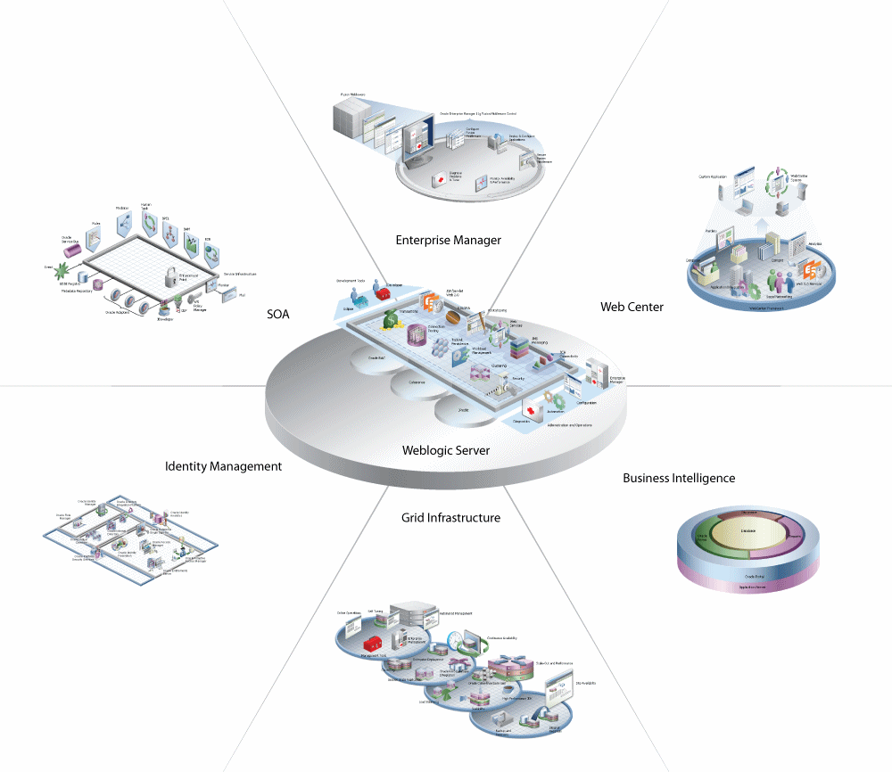

关于Weblogic Server
更新日期:
Weblogic, 美国Oracle公司名下产品，是一个基于 J2EE 架构、可扩展的应用服务器
总览
- 支持多种类型的分布式应用
- 基于 SOA 应用的理想架构
- 完整实现 J2EE 6.0 标准， 提供标准 API ，访问多种服务，如数据库、消息服务
- 支持 Spring 框架
- 确保应用环境可靠、安全、高可用、可扩展
- 支持服务器集群。避免错误的影响
- 诊断工具，辅助系统管理员，监视和调整性能
- 安全性，保护服务访问，确保数据安全，防止恶意攻击

编程模型
支持以下相关编程：
Web应用
动态元素，如servlet、 jsp
静态元素，如html、 imageWeb服务
通过网络，为其他系统，提供服务
也可作为分布式 web 应用的一部分XML
数据交换
一种存储方式，数据与形式相独立JMS
数据分发服务，确保相互关联的各系统间的信息交流
信息，可以是请求、报告或事件JDBC
集中访问 DBMS 资源Resource Adapter
可连接到 EISEJB
提供对象，来处理信息和业务逻辑RMI
远程方法调用Security APIs
允许将授权和认证集成到J2EE应用
也可自定义安全措施WTC(WebLogic Tuxedo Connectivity)
允许 WebLogic Server 应用和 Tuxedo 之间的相互操作Coherence
为 WebLogic Server 应用，提供分布式缓存和数据网格功能
高可用性
以下功能确保该特性：
WebLogic Server 集群
工作分发
集群多节点可访问同一个session会话Coherence 集群
分发数据到各集群节点，确保可扩展和容错性
Web 应用可选择使用 coherence 数据网格，来存储和复制 HTTP session 状态，来确保可扩展性、容错性和性能Work Managers
管理者基于规则和实际运行性能的统计信息，来考虑工作的优先级
也可用来优化性能
管理者可能广泛用于 WebLogic Server 域，或一个特殊应用或组件Overload protection
过载保护，确保 WebLogic Server 有能力监测和防止过载，并可从中恢复Network channels
通过传输类型，将传输分到不同网络渠道，来有效利用网络资源WebLogic Server 持久化存储
WebLogic Server 子系统和服务，有时要求具有持久化特性
WebLogic Server内置、高性能的存储方案，解决了这个问题Store-and-forward 服务
存储转发服务，确保信息传递到分布在各个WebLogic Sever 上的应用
若出现网络故障，则信息暂存在本地 server 上，等待网络畅通后，再传送Enterprise-ready deployment tools
企业级部署工具，确保应用能从开发环境，部署和迁移到生产环境Production redeployment
新版本产品的部署，不影响旧版本的运行中的工作
诊断框架
诊断框架是一个监视和诊断服务，能够收集运行中的服务器及其部署的应用信息
可检查 server 和应用的性能， 并能防止和诊断故障和性能瓶颈
安全
WebLogic Server 安全架构提供一个全面、灵活的安全基础设施，来应对网络应用遭遇的安全挑战
因此该设施，也可作为一个 WebLogic 应用或企业级管理系统的独立部分
用户
支持多种类型的用户类型
如，GUI图形界面，命令行，RMI-IIOP, T3, Java SE clients, Java EE thin clients, CORBA/IDL clients, and C++ clients that communicate with BEA Tuxedo
集成 Oracle WebLogic Suite
集成其他系统
集成其他 Web 服务器
WebLogic Server API Examples and Sample Application
升级
支持将早期版本的应用，迁移到当前版本